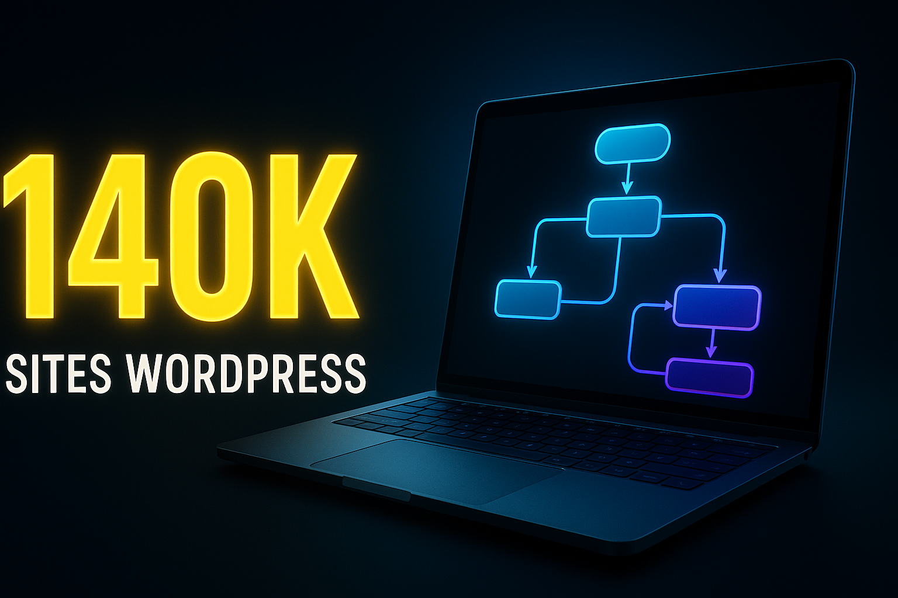
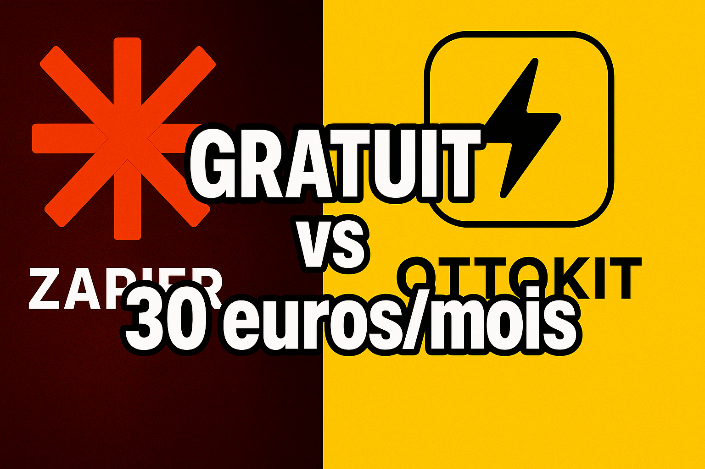
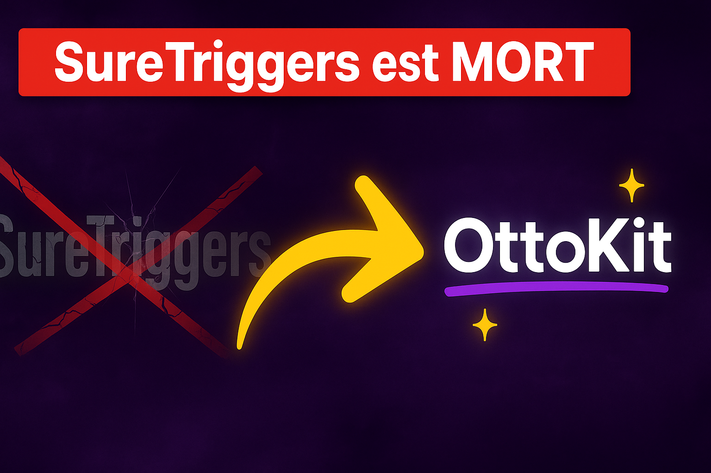
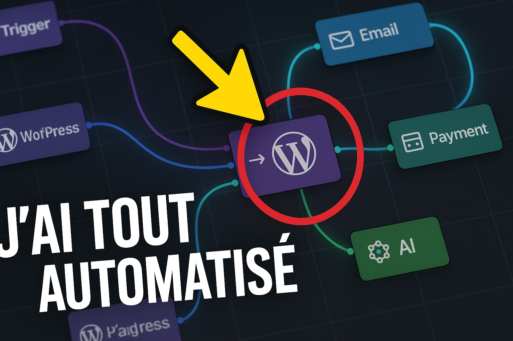
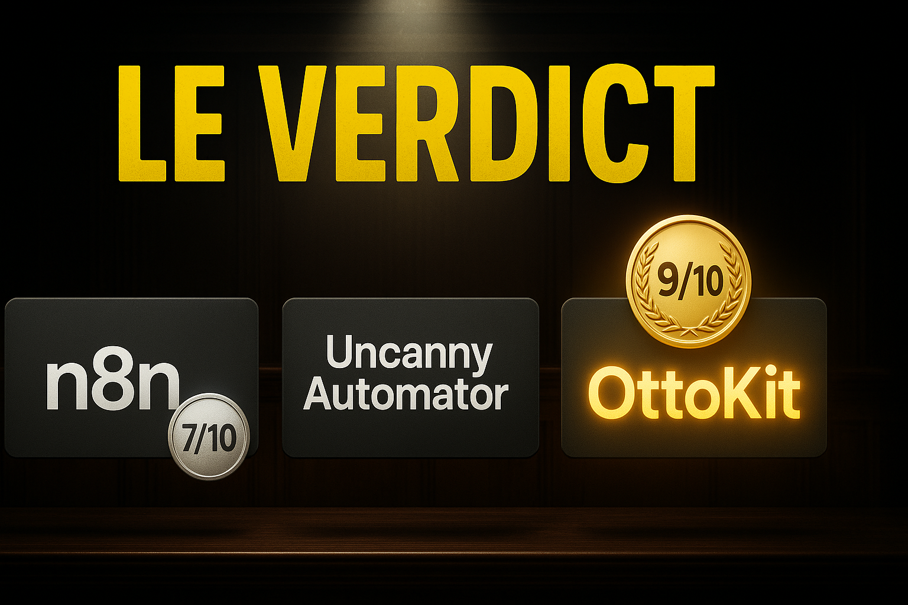

Modele gpt-image-1, taille 1536x1024, qualite high. Genere le 2026-04-16 22:10.

01-140k-sites YouTube thumbnail, 16:9 aspect ratio, cinematic high-contrast style. Giant bold yellow number '140K' on the left side, extremely thick sans-serif font, glowing edge, slight 3D depth. Small subtitle underneath in white: 'SITES WORDPRESS'. On the right side, a stylized modern laptop floating in 3D space with a glowing workflow diagram on screen made of connected nodes in blue and purple gradients. Dark navy gradient background with subtle radial glow. Mood: confident, tech-premium, impressive. No humans. Sharp focus, professional lighting. Text must be perfectly legible.

02-gratuit-vs-zapier YouTube thumbnail, 16:9. Vertical split screen. LEFT HALF: red-tinted dark background, a large orange circular logo shape (Zapier-style) with a thick red X crossed over it, white subtitle 'ZAPIER' below. RIGHT HALF: bright yellow background, clean stylized black lightning-bolt logo inside a rounded square, bold black subtitle 'OTTOKIT' below. Big bold overlay headline centered across the divider, white text with thick black outline: 'GRATUIT vs 30 euros/mois'. High contrast, dramatic, clickbait energy. No humans. Sharp saturated colors, professional finish.

03-suretriggers-mort YouTube thumbnail, 16:9. Dark purple gradient background with subtle smoke texture. LEFT SIDE: grayed-out faded word 'SureTriggers' with a large red diagonal strikethrough, cracked-glass effect, looking dead and broken. MIDDLE: giant bright yellow curved arrow pointing right, with motion blur and glowing edges. RIGHT SIDE: vibrant modern wordmark 'OttoKit' in bold white with a purple underline, small sparkle icons around it, looking alive and new. Top banner overlay in bold white with red accent: 'SureTriggers est MORT'. Dramatic before/after transformation feel. No humans. Premium finish.

04-canvas-automatise YouTube thumbnail, 16:9. Close-up of a complex automation workflow canvas: multiple connected nodes (rectangular cards with small icons) linked by glowing curved lines, representing WordPress triggers wired to email, payment and AI actions. Color-coded nodes in purple, blue and green. One central node highlighted with a thick red circle outline and a large yellow arrow pointing at it. Dark background with subtle grid pattern. Bold white overlay text in bottom-left corner, slight tilt: 'J'AI TOUT AUTOMATISE'. Professional dashboard aesthetic, cinematic depth of field. No humans.

05-le-verdict YouTube thumbnail, 16:9. Three logo plates in a horizontal row on a dark courtroom-inspired background with subtle wood texture and a dramatic spotlight from above. LEFT plate: wordmark 'n8n' with a silver '7/10' badge. MIDDLE plate: wordmark 'Uncanny Automator' with a bronze '6/10' badge. RIGHT plate: wordmark 'OttoKit' highlighted with a gold glow and a '9/10' gold medal badge above it, slightly larger than the others. Giant bold yellow overlay headline at the top: 'LE VERDICT'. Cinematic dramatic lighting, high contrast, premium feel. No humans.